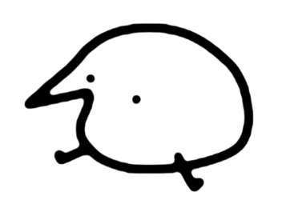

All About Berd Page

Berd's primary animated avatar is a glorious, chaotic little gremlin of a bird, a creature seemingly held together by sheer force of will and a single, unblinking, soulless black eye. This magnificent beast, often just a wobbly, two-dimensional scribble with stick-legs, is the star of a never-ending melodrama that involves dramatic sobbing over minor inconveniences, committing absurd acts of violence with a comically large hammer, and delivering profound, world-weary monologues in a garbled, high-pitched squeak that is both utterly incomprehensible and emotionally resonant. He is a perfect, jittery vessel for existential dread and unhinged joy, a feathered disaster that we can't help but love, even as he commits crimes against his long-suffering friends, all while the soothing, folksy twang of a banjo plays in the background, somehow making the entire descent into madness feel cozy and right.